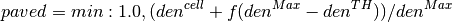

This document describes osm2hydro. osm2hydro is a set of (python) tools that can be used to extract information from OpenStreetMap (OSM) and the Shuttle Radar Topography Mission (SRTM) to kick-start hydrological and hydraulic modelling. The output consists of a set of maps that can be used to kick-start hydrological and hydraulic modelling.
From an OSM file the tools create shapefiles of selected features (OSM tags) and use those to create gridded maps with fraction of paved area, fraction of open water and fraction of unpaved area in each cell. The tools are fully configurable and can be used to generate other maps. They are part of the Deltares OpenEarth initiative (https://publicwiki.deltares.nl/display/OET/OpenEarth) and can be downloaded from google code at http://osm2hydro.googlecode.com) where this documentation is also hosted (http://osm2hydro.googlecode.com/svn/trunk/doc/_build/html/index.html).
Additionally, the tools can also aid in the use of OSM data in the schematisation of hydraulic overland flow models. OSM line elements that represent elevated landscape features are burnt onto an elevation map. The tools are setup to download and use the Shuttle Radar Topography Mission 90 meter elevation map (http://www2.jpl.nasa.gov/srtm/).
The osm2hydro script extract maps of paved area, water and unpaved areas using the following steps (see also Figure 1):
The figure below shows the steps in a flow chart:

Figure 1 Flow chart of the steps taken to derive land use (and specifically paved area fraction) maps from OSM
In some areas the different OSM land-use polygons nearly cover the whole area. In those places the LU polygons can be used to generate the paved, unpaved and water covered area maps we are aiming to derive. However, in large areas the coverage is (very) incomplete. osm2hydro can use the information of the road network, which is usually nearly complete to estimate urban and or paved areas. The steps taken in the script are described below (see the code for details).
After the polygons have been extracted from the OSM file (see the osm2shp documentation fro details)
the first step is
to generate high resolution grids from the shape files. The high resolution
grids by default have a 10 times higher resolution in both the X and Y
direction. The high resolution grids are then resampled to the final
resolution, thus allowing the determination of fractional coverage in each cell.
For all road classes an estimated width is configured and this is used
to generate a (high resolution) grid in which the width is used to
calculate the fraction covered by roads (assuming the road crossed that
cell in a straight line). At the same time a road-density map is
calculated using the same information but in which all roads have a unit width.
From the density maps and a configurable percentile in the
road density map, a map maximum density ( ) and a threshold value (
) and a threshold value ( )
for urban areas is determined. These values are then used in a simple
equation (for all cells :math:` > den^{TH}`) to estimate the paved area within a cell:
)
for urban areas is determined. These values are then used in a simple
equation (for all cells :math:` > den^{TH}`) to estimate the paved area within a cell:

The above equation (where,  a scaling factor is 0.75) basically generates
paved area (houses etc) for all cells that have a road density higher than
the threshold. This map (of paved area fraction) is subsequently merged with the
paved area map that is determined from the polygons found in OSM.
The merge is done by first applying a multiplication factor to the paved
area determined from the road density and then taking the maximum of the two
maps. The multiplication factor (0.8 by default) represents an estimated
average paved area fraction in urban areas.
In a third step the resulting map is merged with the maps that holds
the fraction of road cover in the cell by adding the two maps together
while maximising the result to 1.0.
a scaling factor is 0.75) basically generates
paved area (houses etc) for all cells that have a road density higher than
the threshold. This map (of paved area fraction) is subsequently merged with the
paved area map that is determined from the polygons found in OSM.
The merge is done by first applying a multiplication factor to the paved
area determined from the road density and then taking the maximum of the two
maps. The multiplication factor (0.8 by default) represents an estimated
average paved area fraction in urban areas.
In a third step the resulting map is merged with the maps that holds
the fraction of road cover in the cell by adding the two maps together
while maximising the result to 1.0.
Next two other maps are created, one representing the fraction of unpaved land use (from polygons that represent “green” areas) and one representing the fraction of open water. The open water fraction maps is derived from a combination of waterways in OSM, taking into account the river width if it is available, and land use classified as water (the combined water maps are maximized at 1.0).
Generally, the sum of the three maps (paved, unpaved, water) is not 1, therefore the maps are adjusted using the assumption that the water fraction map and the roads fraction maps are correct using the following steps:
This is the main script. It needs an .ini file to retrieve it’s settings and execute programs and scripts.
Osm2shp is a wrapper around ogr2ogr. It uses an ini type configuration file to extract specified OSM tags to separate shape files.
Convert shape files to grids determining fractional coverage within the grids of the shape file contents.